La mayoría de las imágenes pueden agrandarse clickeando encima.
Los comienzos: hasta Horus (1968)
Hayao Miyazaki nació en 1941 en Tokio. De joven solía dibujar, aunque como pasatiempo. Del cine animado, más que Disney o la animación japonesa de entonces, lo lo marcaron obras como "El rey y el pájaro" (Paul Grimault, Francia, 1948; info) "La reina de las nieves" (Atamanov, Rusia, 1957, info) y los hermanos Fleischer*. Estudió ciencias políticas y economía. Tras graduarse, ingresó en 1963 al estudio de animación Toei, y trabajó como auxiliar de dibujo, mayormente para series de TV. Allí conoció a Takahata. 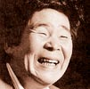
Isao Takahata, 6 años mayor, ya llevaba algunos años en el estudio, en roles de mayor relevancia.
En 1964 Miyazaki encabezó un movimiento sindical en el estudio, secundado por Takahata.
Allí se cimentó la amistad de los futuros creadores de Ghibli; también allí Miyazaki conoció a su futura
esposa, con quien se casó al año siguiente.
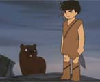
En 1965 Takahata tuvo su primer oportunidad de dirigir un largometraje: Las aventuras de Horus, Príncipe
del Sol (o "Hols, Prince of the Sun", o "Taiyou no Ouji Horusu no Daibouken"). Miyazaki tuvo un rol
importante como animador y aportador de ideas. La concepción de Takahata y su equipo fue, en el aspecto
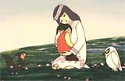
estético y argumental, muy innovadora y ambiciosa; y por lo mismo, su realización fue muy accidentada.
La película logró terminarse, a duras penas, a fines 1968 (el plan original del proyecto era de ocho meses).
Recibió muy buenas críticas, pero fue un fracaso de público, siendo sacada de cartel a los diez días.
Un triunfo artístico, pero un desastre económico para el estudio. Takahata y Miyazaki abadonaron
el estudio Toei en 1971.
Época pre-Ghibli: hasta Nausicaa (1971-1984)
La dupla Miyazaki-Takahata tuvo un breve paso (1971-1974) por los estudios A-Pro. Allí Miyazaki dirigió algunos capitulos de la serie de TV Lupin III, sobre un personaje conocido, 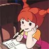 que revisitaría años más tarde para su primer película. Tras un frustrado intento de filmar un largometraje (Pippi Longstockings; Miyazaki viajó a Suecia para conseguir los derechos, sin éxito; las ciudades europeas, sin embargo, parecen haber sido siempre una fuente de inspiración para él), idea, escribe y dibuja la película "Panda Kopanda" (1972), que dirige Takahata. Tendrá su secuela en 1973. Obra menor, breve y muy infantil, tiene sin embargo su encanto, fuertemente personal, y anticipa claramente la que sería una de las obras cumbres de Miyazaki: "Mi vecino Totoro".
En 1973 pasan al Nippon Estudio (en rigor, su filial Zuiyo Pictures), para trabajar en lo que sería una página importante de la animación: la "World Masterpiece Theater" (WMT), 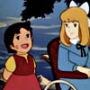 una serie de TV, una por año, sobre clásicos de la literatura infantil. A Takahata y Miyazaki les toca Heidi, la niña de los Alpes; 52 episodios, emitidos durante 1974. Takahata dirige, Miyazaki hace de todo un poco; sobre todo la escenografía, para lo cual viaja a Suiza a tomar notas. La serie es un éxito, aun fuera de Japón (Argentina incluida). Y si hoy la vemos como una obra relativamente infantil, su concepción era revolucionaria, y en ella asoman muchas de las virtudes de Takahata y Miyazaki: una animación naturalista, sensual, contemplativa, en la temática, en los gestos y en los escenarios. Antes de Heidi, se creía que una serie de animé requería acción ruidosa y fantasía (futurista, en lo posible) para gustar.
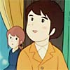En 1976 Takahata dirigió, para la misma WMT, "Marco, de los Apeninos a los Andes", sobre el libro "Corazón" de D'Amicis; también 52 episodios, también Miyazaki a cargo de la escenografía (viajó para ello a Italia y a Argentina). Algo menos conocida que Heidi (en Argentina no se emitió completa, sea por baja audiencia o por considerarse que el argumento era algo traumático para los niños), tiene parecidas virtudes, con mayor vuelo dramático y desarrollo de los personajes.
En 1978 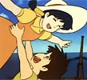 Miyazaki dirige su primer (y única) serie de TV: "Conan, el niño del futuro", en 26 episodios. Con un clima más épico-aventurero, muestra una mano firme y un gusto seguro; los personajes logran relieve, y anticipan rasgos del estudio Ghibli (sobre todo de "Laputa, castillo el cielo"). También muestra la tendencia de Miyazaki a involucrarse en todos los aspectos de la película: no sólo la dirección sino el guión, storyboards y animación. Fue, por lo mismo, una experiencia agotadora para Miyazaki, que recibió la ayuda de Tahakata en algunos episodios.

En 1979 Takahata dirige "Ana, de Tejas Verdes", su última serie en la WMT; probablemente superando la calidad
de Heidi y Marco. Miyazaki coopera en los primeros capítulos.
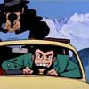
Pero luego se dedica a la dirección
de "Lupin III, El castillo de Cagliostro". Es su primer largometraje, aunque algunos dudamos en considerarlo
enteramente suyo, puesto que el personaje (el ladrón simpático, de larga data en las series de TV) le es ajeno.
La película es bien recibida, de todos modos, y muchos amantes del género la consideran "de culto".
En 1981 Takahata filma "Jarinko Chie", sobre un personaje de un manga*,
película muy graciosa y zafada, sobre la que además filmará una serie muy popular en Japón.
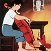
Y en
en 1982, "Goshu, el cellista", película
corta, más experimental en lo formal (esto es una constante en Takahata).
Miyazaki, en cambio, pasará los años 1980-1983 sin películas relevantes, sólo la dirección de seis episodios de la serie "Sherlock Hound" (una versión perruna de Sherlock Holmes) y trabajos menores. Desde 1982 dedica su tiempo al dibujo de un manga épico, ambicioso y complejo: Nausicaa. Es publicado en la revista Animage, y es enormemente popular en Japón. Miyazaki continuará escribiéndolo por más de diez años, y muchos lo consideran la obra de su vida.
Mientras tanto, en 1983 Miyazaki y Takahata están la búsqueda de una oportunidad de hacer una película "grande"; pero lo único que la productora Tokuma Shoten considera financieramente viable es una versión fílmica de Nausicaa. Miyazaki al principio se resiste; finalmente cede, con la condición de que Takahata sea el productor.
Época post-Ghibli: 1984 hasta hoy
Nausicaa del valle del viento 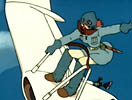 se estrena en 1984 y supera las expectativas. Marca un antes y un después en la obra de Miyazaki. Sin ser un gran éxito financiero (los costos de producción de los largometrajes de anime son muy altos), alcanzan para que Miyazaki y Takahata se animen a fundar un estudio propio: es el nacimiento del estudio Ghibli.
Nausicaa también marca la aparición de dos amigos de Miyazaki, que tendrán un papel fundamental en Ghibli: el entonces poco conocido Joe Hisaishi, que en adelante pondrá música a todas las películas de Miyazaki, y Toshio Suzuki, que será productor general y presidente de Ghibli hasta hoy.
A partir de entonces, el estudio Ghibli adquirirá renombre mundial, produciendo con regularidad largometrajes de una rara calidad y una concepción artística sui generis. Son quince películas (más algunos pocos cortos), de las cuales 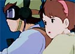 siete (ocho si incluimos Nausicaa) fueron dirigidas por Miyazaki, y cuatro por Takahata.
Laputa, castillo en el cielo (1986) es una película de acción, con una paleta colorida y cálida, que marca progresos en la animación y la música. Se afirman los elementos característicos de Miyazaki: escenas de vuelo, escenarios deslumbrantes, una pareja de protagonistas (recuerdan a Conan y Lana, de la serie de 1978) con un carácter femenino típicamente enérgico y sensible.
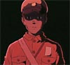
En 1988 se estrenan simultáneamente La tumba de las luciérnagas, de Takahata, y Mi vecino Totoro,
de Miyazaki.
La primera se ha convertido en la película más célebre de Takahata;
 una historia trágica de dos huérfanos a fines
de la segunda guerra mundial, animada con realismo y delicadeza.
una historia trágica de dos huérfanos a fines
de la segunda guerra mundial, animada con realismo y delicadeza.
Totoro, por su lado, en su sencillez idílica
es quizás la obra más feliz de Miyazaki, la preferida por los niños y por muchos adultos (yo entre ellos);
una cumbre de perfección en su línea que además proveería al estudio de su logo característico...
 y de una impensada fuente de ingresos por el merchandising...
y de una impensada fuente de ingresos por el merchandising...
Kiki's delivery service (1989), otra de Miyazaki de tono alegre y cero violencias, muestra un dominio completo de la animación. Algo demasiado inocente o edulcorada para algunos otakus, fue bien recibida por el público. Recién en este momento el estudio logra su estabilidad financiera y puede confiar en un horizonte de vida no demasiado breve.
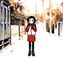
Con Omohide Poro Poro (Only yesterday) (1991) Takahata ratifica su inclinación por la animación naturalista y la experimentación. Película evocativa y adulta, cada vez más lejos del anime "mainstream", es poco conocida fuera de Japón, acaso por sus frequentes alusiones a la cultura japonesa y no estar destinada al público infantil. Muy expresiva, lenta para algunos, con un final 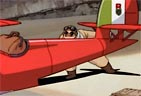 de lo más conmovedor que he visto. Quizás mi preferida de lo mucho bueno de Takahata.
Porco Rosso (1992) empezó como un corto de Miyazaki, para una línea aérea, y terminó siendo una de sus películas más libres y personales. En Italia de 1930, con un cerdo aviador como protagonista.
Ghibli trató de buscar talentos jóvenes con vistas a continuar en el futuro la obra de Miyazaki y Takahata; por distintos motivos,
la cosa no viene fácil..
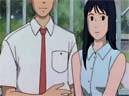
En 1993 asignaron a Tomomi Mochizuki la dirección de "Ocean waves (Puedo escuchar el mar)"
una película para TV.
Si el proyecto fue un fracaso en términos económicos-empresariales (insumió mucho más dinero
y tiempo del planeado, casi como una película para cine), el resultado artístico
fue muy bueno. La película, realista, sobre un triángulo de adolescentes,
está bien lograda, con un buen gusto en la concepción y la realización digna de Ghibli;
merece ser más conocida.

Con Pom-poko (1994) Takahata aborda una temática ecologista y folklórica, con una animación estupenda y un efectiva resolución argumental. No resulta del todo lograda, sin embargo, tal vez por el protagonismo animal -rasgo infrecuente en Ghibli.
Miyazaki participa también en trabajos menores, como cortos publicitarios para TV; en 1995 dirige "On your mark"*, una especie de video-clip de seis minutos para un grupo de música pop-rock. 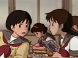
Yoshumi Kondo era una de las promesas de sangre joven para Ghibli. En 1995 dirige Whisper of the Heart (Si escuchas de cerca o Susurros del corazón), basada en un manga romántico, con guión y producción de Miyazaki. El resultado es excelente, la película es hoy considerada una de las mejores de Ghibli. Pero, por desgracia, Kondo muere en 1998.
El prestigio del estudio Ghibli ya está para entonces bien establecido. En 1996 Disney acuerda con Tokuma la distribución de todas las obras de Ghibli en el mundo 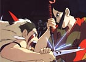 occidental (exceptuando "La tumbade las luciérnagas" y "Ocean waves") [info].
En 1997 Miyazaki idea, dibuja y dirige lo que, según las apariencias, sería su canto de cisne. Princesa Mononoke, ambientada en el medioevo japonés, épica, ambiciosa, ecologista. y muy imaginativa. Fue la película más vista en la historia del cine de Japón, en su momento. Miyazaki anuncia su retiro -por suerte, no definitivo- en 1998.

A su vez, Mis vecinos los Yamada (1999) acaso sea el canto de cisne de Takahata. Si es así, repite el resultado de su primer película (Horus): un gran éxito de crítica y un gran fracaso de público, de duras consecuencias para el estudio. Basada en una tira de historietas, de un humorismo familiar constumbrista y episódico, lo más sorprendente (y tal vez lo que motivó el desinterés del público ghibliano) es el estilo de dibujo, de una engañosa simplicidad, con líneas difuminadas y colores pastel, lejos de la estética tradicional de Ghibli (y del anime).
"Ghiblies" (2000) es un corto de veinte minutos, delirante, experimental y desparejo, sobre el propio estudio Ghibli. Dirigido por Yoshiyuki Momose, para un especial de TV; en 2002 tendrá una secuela :"Ghiblies 2". 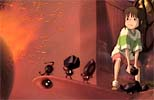
Miyazaki volvió con "El viaje de Chihiro" (2001), película muy original y rica, sobre un guión propio, un éxito que superó a Mononoke, y que, por primera vez, tuvo repercusión masiva en el exterior. Ganó el Oscar a la mejor animación. Es, en mi apreciación, la obra cumbre de Miyazaki, junto con "Totoro".
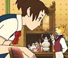"The cat returns" (El reino de los gatos), del año siguiente, es otro intento de Ghibli para abrir el juego. Dirigida por Hiroyuki Morita. No está, a mi ver, a la altura de la historia del estudio Ghibli; aunque no todos opinan lo mismo. 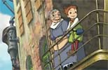
"El castillo errante de Howl" (2004), (o "El increíble castillo vagabundo") sobre un libro de Diana Wynne Jones, empezó dirigida por Mamoru Hosoda, pero ante su defección Miyazaki tomó las riendas. No fue tan bien recibida por los críticos como "Chihiro", por su argumento algo enmarañado. Pero su belleza visual es abrumadora, y los "toques Miyazaki" se hacen notar.
"Cuentos de Terramar" (2006), sobre un libro de Ursula LeGuin, marcó el debut del hijo de Miyazaki, Goro. Algo por debajo de los estándares Ghibli.
Finalmente "Ponyo" es la nueva obra de Hayao Miyazaki, sobre idea y guión propio, a estrenarse a mediados de 2008.
* * *
No se tienen demasiados datos sobre el futuro del estudio Ghibli. Takahata ha contado en algunas entrevistas que está trabajando en varios proyectos, pero que no puede asegurar si alguno de ellos llegará a concretarse en una película. Y no han surgido nombres que aseguren un recambio generacional para cuando los veteranos -Miyazaki y Takahata- se retiren.
Miyazaki, además, ha tenido gran participación en el diseño del Museo Ghibli: desde los detalles hasta la arquitectura. Y ha hecho tres películas cortas (una de ellas, una secuela de "Totoro") que sólo se proyectan en la sala del museo.
Más datos sobre la historia de Miyazaki y Takahata en esta entrevista (en inglés).